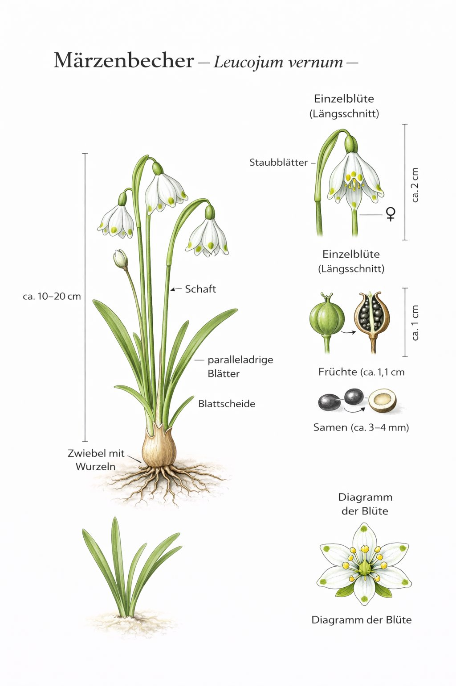
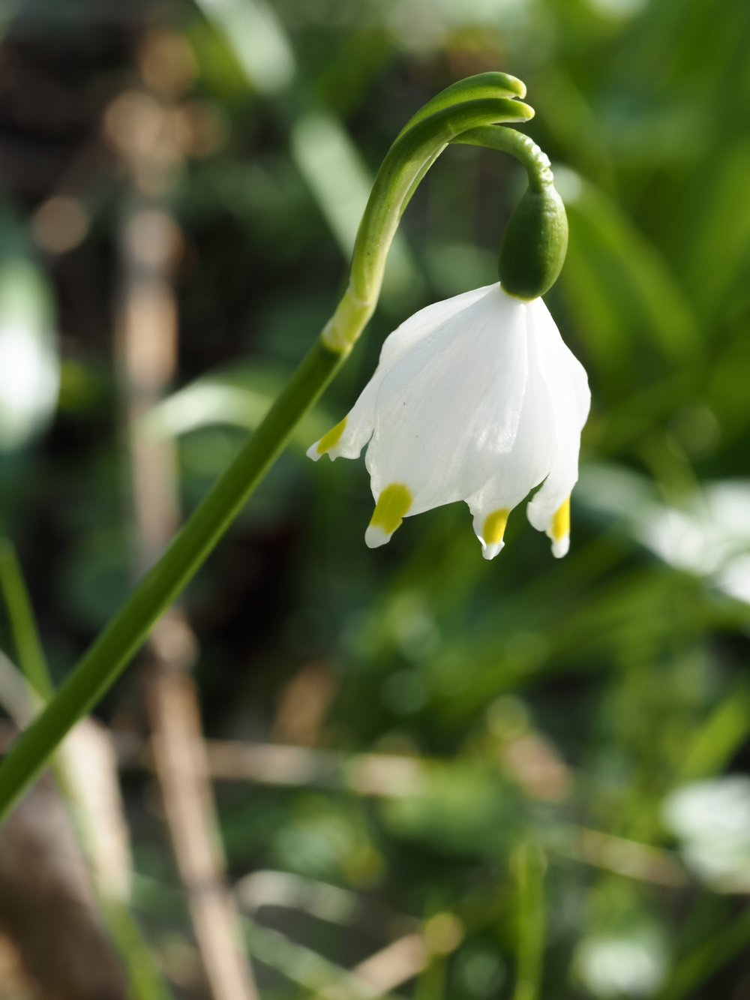

Grösser als das Schneeglöckchen – und von vielen damit verwechselt.


Zeuge intakter Auen
Der Märzbecher braucht dauerhaft feuchte Böden – er ist eng an Auenwälder gebunden, die heute zu den gefährdetsten Lebensräumen Europas zählen. Wo Märzbecher in Massen blühen, ist noch ein intakter Auwald erhalten. Oder der Boden erinnert sich noch an einen früheren Fluss – Jahrzehnte nach seiner Begradigung. Merksatz:6 gleich = Märzbecher · 3+3 (aussen länger) = Schneeglöckchen. Dieses Merkmal ist im Feld sofort erkennbar.
Wissenswertes & Merksätze
Schutzstatus
Ein grosser Bestand hat Jahrhunderte gebraucht. Das Ausgraben einer Zwiebel ist illegal – in Stunden zerstört, was in Jahrhunderten entstanden ist.
Auen-Indikator
Märzbecher-Massen zeigen Reste ehemaliger Flussauen an – auch wenn der Fluss heute begradigt ist.